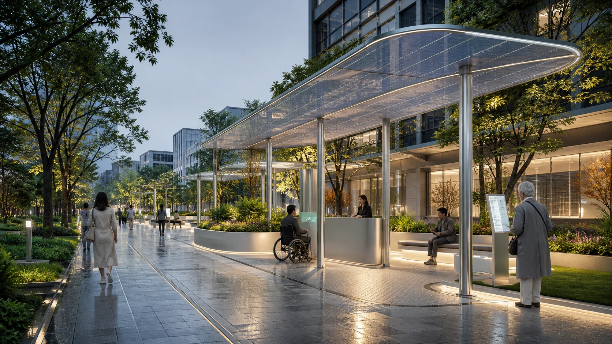
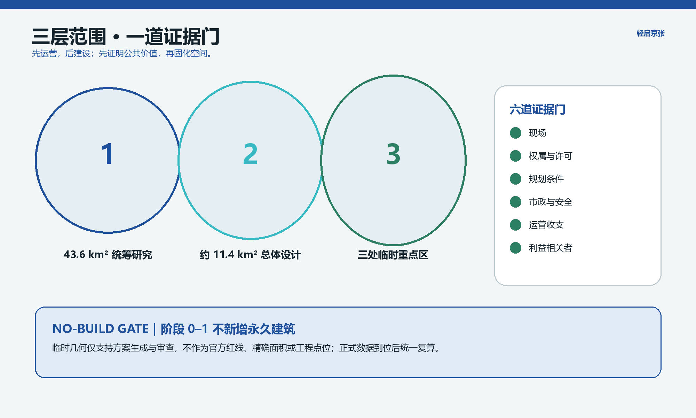
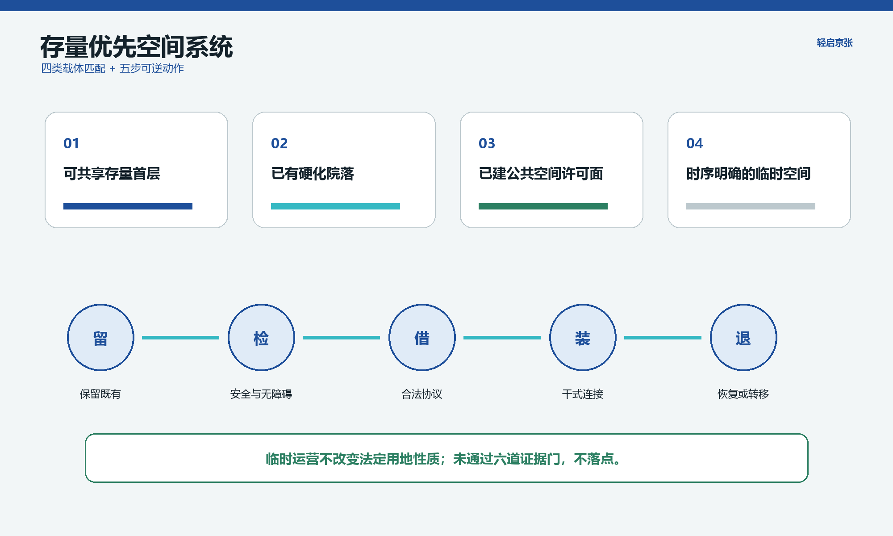
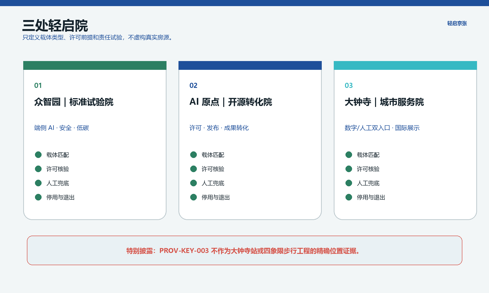
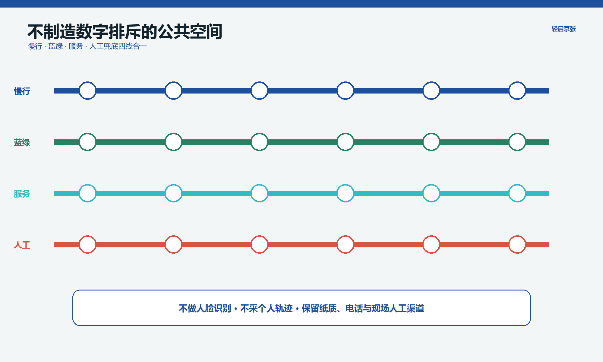
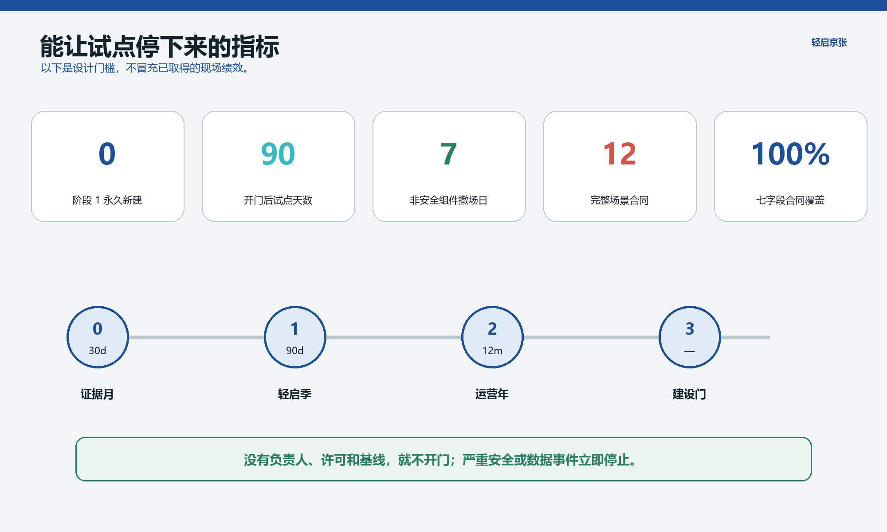

轻启京张
先运营，后建设；先证明公共价值，再固化空间。
AI 概念表现，非现场照片、非官方效果图核心指标 · No-Build Gate
阶段 0–1 不新增永久建筑。只有六道证据门全部通过，才讨论选择性建设。
总览地图 · 三层范围与临时边界
总体范围和三处重点区沿用仓库临时几何，只用于设计讨论和一致性审查；不作为官方红线、精确面积、审批或大钟寺站工程点位依据。

用地分区 · 存量优先
临时运营不改变法定用地性质；建筑执行留、检、借、装、退五步法。

重点区域 · 三处轻启院
三个院均以合法存量载体匹配为前提，不虚构真实房源或精确工程点位。

AI 场景 · 十二张责任合同
每张场景卡含负责人、许可、基线、指标、停用、人工兜底和退出。系统不做人脸识别、个体轨迹、信用评分或自动执法。
交通慢行
先以人工巡查、匿名工单和短时观察建立断点基线，不承诺未经专项论证的道路或跨环工程。
蓝绿公共空间
既有树木和通行优先，雨园积木仅为可撤装教育原型，不冒充防洪绩效。

更新项目
近期为载体核验和 90 天试点；中期为评估后的存量适应性改造；长期建设必须重过六道证据门。
任务覆盖
公告 1.3–1.5 与 agent.1–agent.6 均映射到正文、几何、指标、图纸和合规矩阵。
自检状态
确定性、空间、视觉和专业四门审核结果记录于 self_check.json；临时边界提示保留。

来源
官方公告、仓库任务书和来源登记是主依据；海淀政策与国际案例仅按 sources.json 的用途和限制迁移。
假设
尚未完成组织方授权踏勘、产权核验或利益相关者访谈；载体、用户需求与运营条件均待阶段 0 验证。